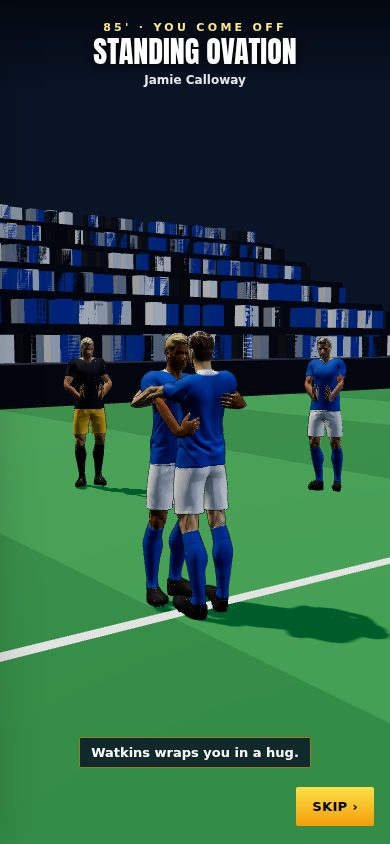
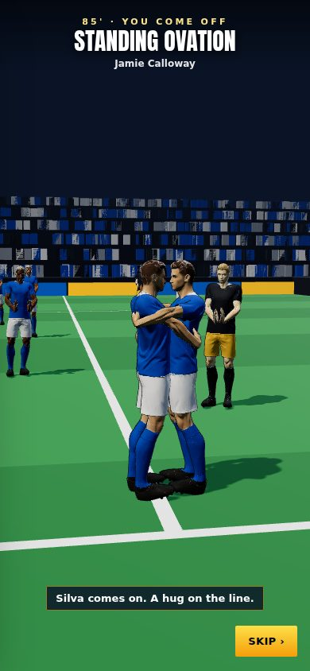
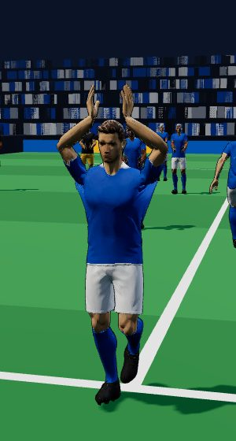
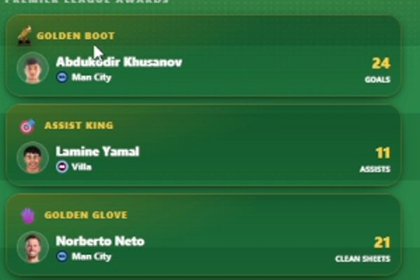

8 October 2026 · branch Mikey · 16 commits since v0.10 · tests: 266 of 266 passing
360°The new 3D standing ovation at the farewell's 85th minute
0Centre-backs labelled as strikers (Khusanov won a Golden Boot this way)
14–17Assist King's total (was 10–14)
24–34 m/sA defender's clearance (was 18–26)
Check these
Headline: the standing ovation, in 3D
Off at 85' in your farewell: the camera circles you once, the whole ground stands and claps, and team-mates and rivals stop you on the way off.
Problem: the 85th minute was a banner over the commentary. Why: it was built as text first. Fix: a 3D scene of about 24 seconds, asked for in your recording. You walk to the touchline clapping the fans above your head. Your two best team-mates and two rivals stop you, Ballon d'Or winners first: a hug, a dap-up that pulls in, a pat on the back, another dap-up. The substitute waits on the line, hugs you and runs on. Everyone else on the pitch claps you off, and a caption names each man. Skip › ends it at any time. A phone that can't run 3D gets a drawn version. seen on the test page

A team-mate's hug: arms round each other's backs.

The substitute on the touchline. Look for: the caption names him.

The walk-off: hands above your head to every stand.
How it was made
It uses the same players, stadium and clapping arms as the guard of honour. There are no hug or dap-up animations in our files, and none in the free packs we use. Blender isn't on the cloud machine either. So every greeting is posed live, arm by arm: each hand reaches for a point on the other man.
A first try had the hands stopping 0.23 m short, on the other man's chest, because an arm reaches only about half a metre. So now the two of them stand chest to chest. Also fixed: at the end of the circle, the camera passed inside the stand. Now it stops short of it.
Problem: Man City's Khusanov (a centre-back) won the Golden Boot with 24 goals, and Player of the Season. Why: each club fills fixed slots, two of them strikers. Man City has one real striker. The second slot took "the best player left" and called him a striker, from day one of every career. The dev skip didn't cause it; it only showed it. Fix: a player who fits nowhere near a slot keeps his own position, and old saves are put right when they load. Run through 19 real-data seasons: Khusanov stays a CB, and every Golden Boot winner is a real attacker. measured

Before, from your recording (3:20).
Man United and Wolves lined up as on day one after 19 seasons
Problem: their team sheets matched day one, while the Ballon d'Or list showed their players at new clubs. Why: it wasn't the dev skip. Two real causes:
A relegated club's squad was thrown away, and a fresh day-one copy was loaded when it came back up.
The club you join was reloaded from the database over its own transfers.
Fix: squads go down and come back up with their clubs. A loaded squad never re-adds a player now at another club. Your new club only gains the players it was missing. Over 19 real-data seasons, no club was missing its squad and no player was at two clubs. measured
Kick-off jumped straight to a chance at 44'
Problem: in your farewell, pressing kick off went straight to your first chance at 44', with no commentary. Why: since v0.25, Play jumps straight to your first chance. That is fine at 5', but here it skipped a whole half. Fix: it only jumps to a first chance at or before 12'. A later one is read out minute by minute. not yet seen
Why the first chance was so late
The background match engine on its own, run 1,000 times with the rivals 6 points stronger, gave a first chance by 7' on average, and fewer than 1 in 100 first halves with none. Your farewell was that rare case, or something in the real match differs. Not found yet: see Known issues.
The last match went straight into the awards
Problem: "it didn't let me press end the season". Fix: after the last fixture you land on Home, where "End of Season 🏆" waits for you. not yet seen
No clear way back to the start of the career round-up
Problem: on a later page there were only dots and edge arrows. Fix: a row of page buttons (Career, Seasons, Who won, Clubs, Trophies, Records, Life). One tap goes to any page. not yet seen
Changed
Assists: more of them, and real creators stand out
Goals with an assist: 62 in 100 → 74 in 100 (a real league is about three in four). Better and better-passing creators get them much more often. Measured over 4 real-data seasons. measured
Assist King before10–14
Assist King now14–17
More A than G, before1 in 7
More A than G, now1 in 4
Clearances: you see the boot, and they can go wrong
A clean clearance is 24–34 m/s, up to 60° either way (was 18–26 m/s, about 22°). It keeps flying instead of freezing. New (Settings → Look → Gameplay → Clearances): miscues happen 30 in 100 times for a defender rated 50, down to 10 in 100 at 90. A boot into a body comes off loose, and one live second ball per chance. Over 1,440 chances: goals 480 → 510, own goals 12 → 8. seen
Negotiations are a roll, not a rule
Every counterpart has a hidden limit (their valuation ± 10%). Each counter-offer is a roll: they come up, hold firm, drop to a worse final offer, or walk out. The risk of walking out climbs with how far past their limit you ask: fair about 9%, cheeky 47%, insulting 97%. Sponsors no longer haggle: Sign or Leave it. measured
Relations reworked
Happiness is the average of boss, team and fans. Each Relations game costs 30 energy, the same as training. Talk to your manager is replaced by the manager's penalties: three shots, each at the spot he names, +2 a hit, −2 for none. The signing session is always 10 fans, up to 3 things each, scored at the end. A match changes a relationship by ±6 at most. measured
Smaller changes
Basic KIB can: 2 weeks' wage.
Post-match star bar: one smooth run that eases out, across a level-up too.
Records: listed once on the Season Awards round-up, not after every match.
Ratings: a softer curve for minutes played; goals, passes and misses graded (all tunable).
Star Pass: a reward can sit at any level, 1–100.
The phone: Home (left) and Back (right) buttons; the league table is zoomed in.
from the commits
Added
Every men's Ballon d'Or winner, 1956–2025, saved for a future game mode
Taken only from ballondor.com: the 70 year rankings, all 47 winners' player pages and about 155 articles. Winning-season stats exist on the site for only 7 of 69 years. Page: Ballon d'Or Winners File. Data: data/ballondor/. measured
Known issues
Farewell: why the first chance came at 44' Low
The quick start no longer hides it, but the cause is open. The background engine alone makes a chance-less first half under 1 in 100. Needs a played farewell to check against the real match.
Other clubs' players never age or retire Low
Found while planning the retirement work (5 Oct). Over 20 seasons the squads are the same people at the same ages. Transfers do move them now (above).
Not yet seen in a played career Low
The ovation was seen on the test page only. The kick-off commentary, End of Season and the round-up buttons are measured or worked out from the code. A full playtest was running when this page went out.
Next
Your verdict on the ovation
Length (about 24 s), who greets you, and whether to make real hug animations in Blender in a local session.
The Ballon d'Or game mode
Waiting on: the design.
Previous versions
v0.10 · 4 October 2026 · Relationships rebuilt: bars that move slowly, one game per relationship, happiness decides recovery, no Sponsors bar; injuries switched off
v0.9 · 3 October 2026 · XP rebuilt (slower start, XP by the minute, no double pay) and the XP Book to edit every amount; 3D garden, North/South 2026/27, Club Data
v0.8 · 30 September 2026 · Sponsors Revamp: brands send offers, deal slots by fame, weekly fees, targets, brand happiness, bidding wars, buy-outs and scandals
v0.7 · 30 September 2026 · A new 1-10 star career rating separate from overall, 7 boots, dearer Style, 2 training sessions a week, restyled training, contract terms
v0.6 · 27 September 2026 · Five levels of every boot and lifestyle item, a moving ball on the strike screen, commentary that barely repeats, new chants
v0.5 · 26 September 2026 · How you get picked: win your shirt from a better-rated rival, form over 3 games, subs when the score says, cup rotation
v0.4 · 25 September 2026 · Training rebuilt the New Star Soccer way: 30 fixed levels, three tries, stars raise the skill; pace, vision and free kick matter in matches
v0.3 · 25 September 2026 · What you see on the pitch matches where people stand: nearer players and the ball drawn right, corners from the flag; trophy pictures, instant energy modes, feed likes
v0.2 · 22 September 2026 · Energy master plan: in-match energy modes, a real ticking clock, half-time KIB cans, rest days, tougher fatigue rules
v0.1 · 21 September 2026 · Economy, fame and reputation rebuild: Premier League wages to ★100k, fame levels, one reputation number, 50-season careers